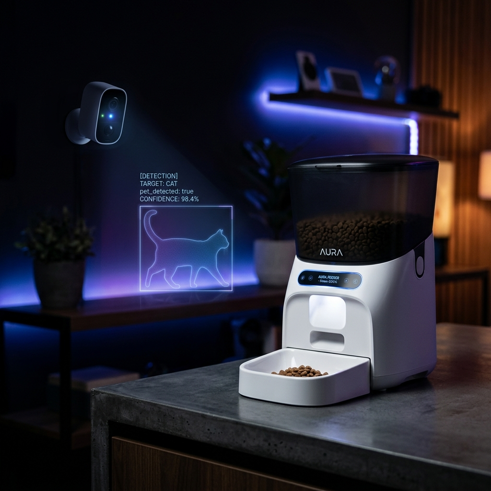

Bridging the gap between hardware and software — turning everyday devices into intelligent, context-aware systems using Home Assistant, AI vision, and real-time automation logic.

A fully autonomous feeding system that doesn't just schedule meals — it sees, thinks, and confirms.
Standard smart feeders are time-based and blind. They dispense food even when the pet isn't there, overfeed, double-feed, or completely miss the pet's presence. There's no intelligence — just a timer.
Motion triggers a camera snapshot. Google Gemini AI analyzes the image to confirm it's your pet. Only then does the feeder dispense the right portion — then a second AI call confirms the kibble actually dropped. Full loop, zero guessing.
Complete setup guide · Blueprint file · Configuration walkthrough
Running containerized home lab environments. VMs, LXC containers, and full infrastructure orchestration on bare metal.
Composing multi-service stacks. Every automation runs in isolated, reproducible containers with clean network separation.
Integrating LLM Vision (Gemini, GPT-4V) into real-world automation flows. AI that doesn't just answer — it acts.
Home Assistant blueprints, custom integrations, Cloudflare Tunnels, and full-stack smart home architectures.
I'm HAiDanny — a home automation enthusiast who got tired of "smart" devices that aren't actually smart. So I started building the missing piece: automations that see, think, and respond.
My approach is practical: take consumer hardware, layer in real AI vision, orchestrate it with Home Assistant, and document everything so you can replicate it. No PhD required. Just a curious mind and a Proxmox server.